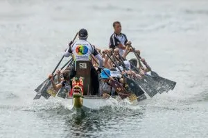
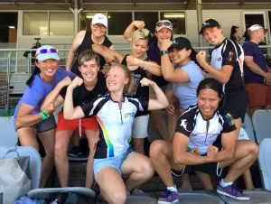

Bringing diversity to Dragon Boating
Next year, the ACT is hosting the National Dragon Boat Championships, with crews coming from all over Australia to compete.
One of the many teams participating at the event is Different Strokes, an LGBTQI and Allies Dragon Boat Club based in Sydney. It thrives by giving members a place to be themselves and feel comfortable within the sporting family.
After starting with only 10 people, its membership has grown with up to 100 members is one of the biggest in Australia.
To learn more about the team, we touched based with Club President, Nicole Bates.
Where did the initial idea to form the club come from?
There have always been gay and lesbian paddlers in dragonboating clubs but in 2008, it was thought that there was room for a new club that gave LGBTQI a safe, supportive environment to experience this relatively new sport.
Does the LGBTQI community, in general, feel excluded from sports?
No, but some people feel more comfortable in teams where membership is drawn from a familiar demographic. For example in dragonboating we have clubs such as the Chinese Youth League, Dragons Abreast and other cancer survivor crews, Navy crews and school groups. So whilst LGBTQI compete in all sports, they may feel safer or more supported in a LGBTQI friendly team.

Source: Nicole Bates.
Is the formation of the club part of making a statement or are you simply wishing to be seen as a sporting team?
We are first and foremost a sporting club but we are very proudly a LGBTQI one. We are not so much making a statement as hopefully providing a good example to others in our community around the benefits of our sport.
Have there been any issues raised in terms of the strength of former males competing in female events?
None that we are directly aware of, however dragon boating is a sport in which technique and fitness are of more benefit than strength.
What is the overall profile of your paddlers?
Our club membership has stayed constant between 90 and 105 members each season since 2013.
Our youngest member is in their early twenties and our eldest is in their early 70s. The backgrounds are very varied and cover most ethnicities. We often have people find us who are new to Sydney and wish to connect with like-minded groups.

Source: Nicole Bates
It is fantastic to have the dynamic of being competitive as well as having fun, how does the club feel to be together?
The club has a thriving social side, but when it comes to competing, we are up there with the best in the country. In the past 5 seasons we have gone from strength to strength competing in local and National regattas. And our club will, for the first time in its history, send 3 crews to Hungary in July to compete at the invitational Club Crew World Championships. Basically, we train hard but have a flair for fun.
You had to skip Mardi Gras this year to be at Dragon Boat Nationals, how did the team perform in Nationals?
The Australian Championships were held at Lake Kawana, Maroochydore QLD which is a fantastic venue for water sports. Our club competed over 4 days in mixed, womens and opens racing. The competition is always strong as clubs from all over Australia come together to compete, however we came away with two Gold and three Bronze medals.
Thus, apart from the terrible weather over the week, the results were satisfying. All the crews show pride in their colours and create safe spaces in the sport of Dragon Boating that celebrates diversity.
While they missed out on it this year, the Mardi Gras of 2017 hosted a scene of excitement. Hours of preparation went into bring together a 'fantabulous' parade float hosted and many needles brought together costumes for thee team too become merpeople, anemone and jellyfish.
This article first appeared in NowUC